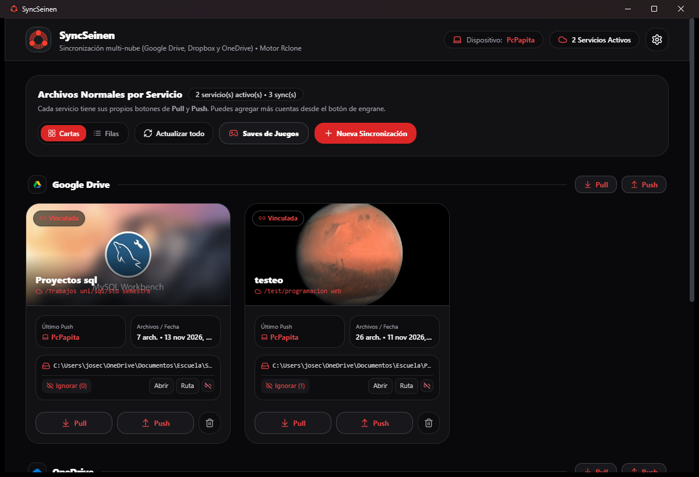
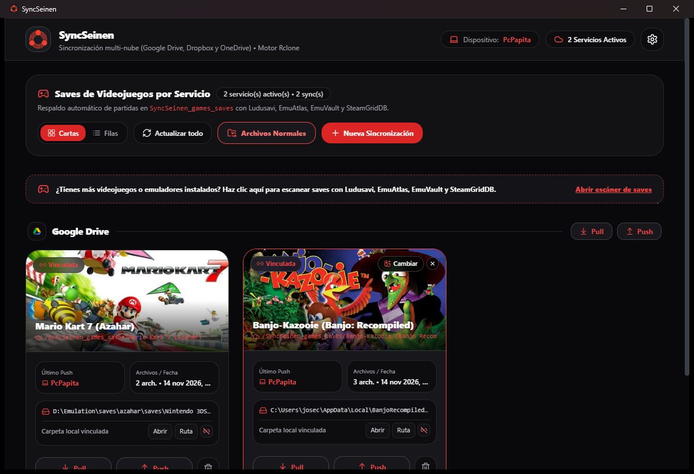
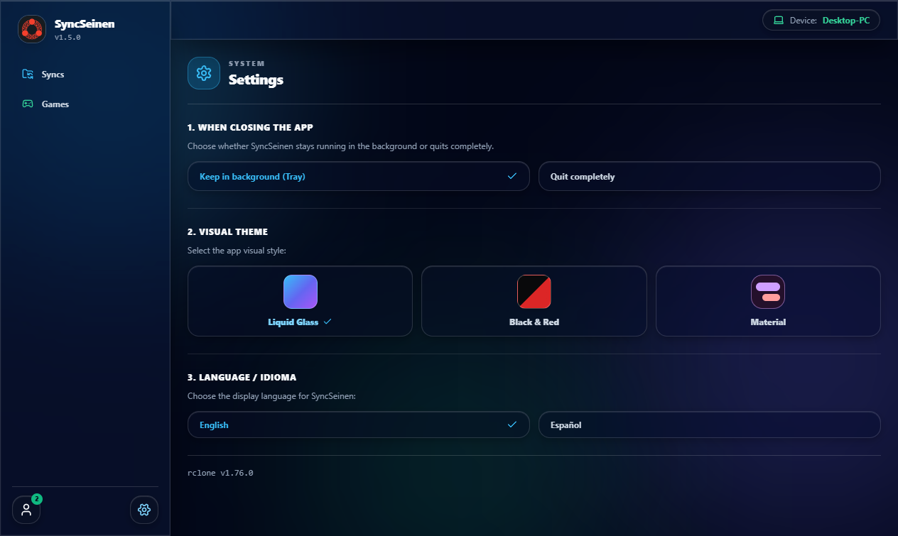

Your folders & game saves, synced between PC and Steam Deck.
SyncSeinen (Windows & Linux desktop app) and Deck-Seinen (Steam Deck Decky Loader plugin) work together using the exact same cloud metadata so you can pick up your progress on any device without losing a single save.
Download SyncSeinen & Deck-Seinen
Direct downloads fetched live from GitHub Releases. No installer needed on Windows, AppImage for Linux, and ZIP for Decky Loader.
SyncSeinen
Desktop App • Windows & LinuxFull desktop client with Zen sidebar, multi-cloud support, automatic PC & emulator save scanner (Ludusavi, EmuAtlas, EmuVault), SteamGridDB & online cover search, selective ignore rules, and system tray quick actions.
Deck-Seinen
Decky Loader Plugin • Steam Deck / SteamOSNative Quick Access Menu plugin for Steam Deck Gaming Mode. Automatically detects Proton compatdata (SSD & SD card), Steam userdata, EmuDeck, and Flatpak emulators so you can Pull & Push saves without leaving your game.
Install via Decky Loader → Settings → Developer → Install Plugin from ZIP.
Built for both Desktop & Handheld
- 01 Multi-Cloud rclone Engine: Link Google Drive, Dropbox, and OneDrive simultaneously. Every provider has independent Pull / Push controls.
- 02 Automatic Save Detection: Scans PC games and 14+ emulators (Eden, Yuzu, Ryujinx, Cemu, Azahar, Dolphin, RetroArch, PCSX2, PPSSPP, RPCS3, etc.) and assigns SteamGridDB covers.
- 03 Regular Files + Selective Ignore: Sync any folder on your PC and exclude subfolders or files with Select all / Unselect all controls.
- 04 Clean v1.5.0 Interface: Zen-style sidebar, dedicated Edit screen per sync, 3 visual themes (Liquid Glass, Black & Red, Material), and background system tray.
- 01 Gaming Mode Native: Lives inside Decky Loader's Quick Access Menu with bundled Linux x86_64 rclone — no desktop mode needed after setup.
- 02 Smart Proton & EmuDeck Paths: Automatically finds save locations inside Steam compatdata (internal SSD & SD card), userdata, and Flatpak/EmuDeck emulators.
- 03 Real-time Pending Status: Highlights saves as Pending whenever another device pushed newer progress, and clears back to Up to date after Pull.
- 04 Built-in File Explorer & Manual Sync: Browse folders safely (read-only) to pick specific files or folders to upload from your Steam Deck.
How SyncSeinen & Deck-Seinen Work Together
Both apps read and write the exact same _SyncSeinen_Metadata JSON files and SyncSeinen_games_saves folder in your cloud drive.
Play & Push on PC
SyncSeinen uploads your save to /SyncSeinen_games_saves/<Game> and stamps your device name and timestamp into _SyncSeinen_Metadata.
Detect & Pull on Deck
Deck-Seinen reads the cloud metadata, flags the game as Pending, automatically matches your Proton compatdata or emulator folder, and downloads your save.
Push Back & Continue
When you finish playing on Steam Deck, press Push in Decky. Back on your PC, SyncSeinen automatically surfaces it as Pending Pull so your progress stays in sync.
Inside SyncSeinen v1.5.0


